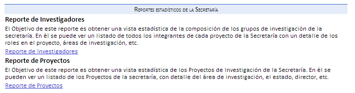
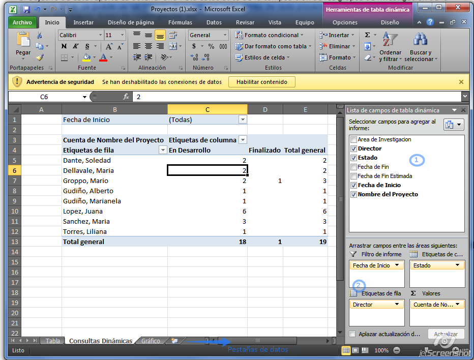
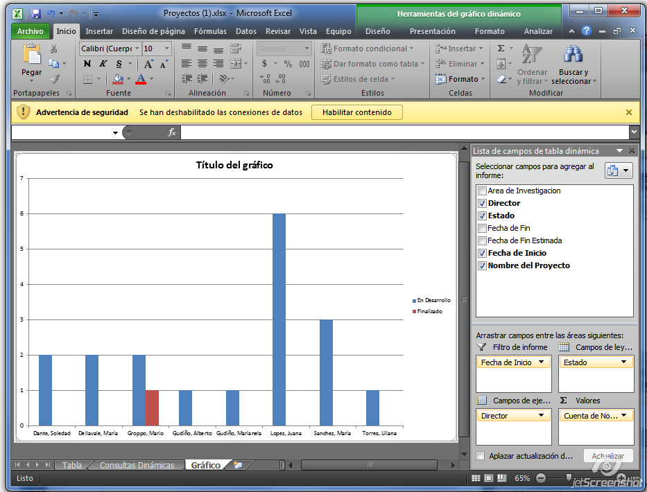

El objetivo se encuentra descripto ya en la página.
Para utilizar los reportes:

- Descargue el reporte que desea a utilizar.
- Abre el mismo con Excel:
- Pestaña 1: Datos que puede utilizar.
- Pestaña 2: Reportes editables.
- Pestaña 3: Gráficos obtenidos.
- Este se conectará con los datos de una vista generada en la base de datos, los cuales podrá editar para obtener todo tipo de reportes con gráficos en Excel.
Para obtener reportes:
- Arrastre las opciones de (1) hasta (2) y obtenga el formulario.

- Si cambia de pestaña podrá observar el resultado del reporte creado a través de un gráfico.

Created with the Personal Edition of HelpNDoc: Easily create EPub books